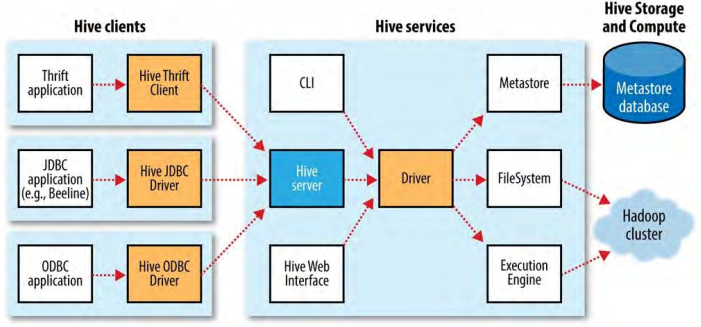
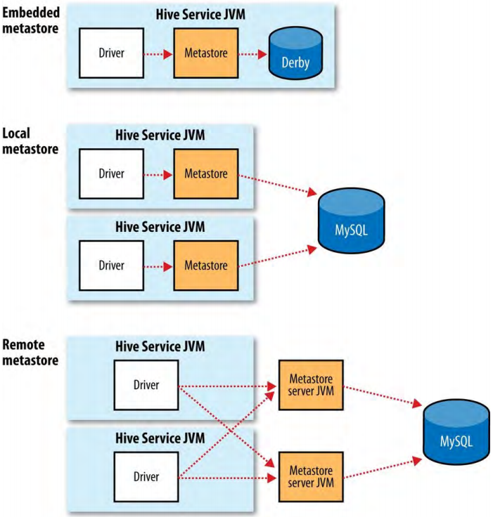

4、Running Hive
4.1、Configuring Hive
使用与Hadoop类似的XML配置文件（hive-site.xml，位于Hive的conf目录中，这个目录也包含了Hive的默认配置文件hive-default.xml）配置Hive。
通过给hive命令传递--config选项可以覆盖hive-site.xml文件中Hive查找配置的目录：
% hive --config /Users/tom/dev/hive-conf
注意，这个选项指定了配置所在目录（containing directory），而不是hive-stie.xml本身。如果有多个site文件——比如对应不同集群——这个选项就很有用了，可以经常在这些文件之间切换。也可以设置HIVE_CONF_DIR环境变量为配置目录已达到相同目的。
hive-site.xml文件可以配置集群连接的文件系统（fs.defaultFS）和资源管理器（yarn.resourcemanager.address）。如果不设置，默认的是本地文件系统和本地（in-process）job runner——与Hadoop中类似——在小的测试数据集上使用Hive时很方便。Metastore配置设置选项也在hive-site.xml文件中。
通过给hive命令传递-hiveconf选项，可以基于会话对Hive进行配置。例如，如下命令为会话设置了集群：
% hive -hiveconf fs.defaultFS=hdfs://localhost \
-hiveconf mapreduce.framework.name=yarn \
-hiveconf yarn.resourcemanager.address=localhost:8032
使用SET命令，可以在一个会话中改变Hive设置。对于改变某个特定查询的Hive设置很有用。例如，如下命令确保
根据表的定义装配buckects：
hive> SET hive.enforce.bucketing=true;
使用SET和属性名，可以查看任意属性的当前值：
hive> SET hive.enforce.bucketing;
hive.enforce.bucketing=true
如果只有SET命令，会列出Hive设置的所有属性和属性值。但是，这个列表不包含Hadop的默认值，除非是用户明确设置了。使用SET -v命令列出系统的所有属性，包含Hadoop默认值。
Hive配置优先级：
- Hive SET命令
- 命令行-hiveconf选项
- hive-site.xml和Hadoop site文件（core-site.xml，hdfs-site.xml，mapred-site.xml，yarn-site.xml）
- Hive默认值和Hadoop默认文件（core-default.xml，hdfs-default.xml，mapred-default.xml，yarn-default.xml）
4.1.1、Execution engines
Hive最初使用MapReduce作为执行引擎，并且仍然是默认的执行引擎。现在可以使用Apache Tez作为它的执行引擎。Tez和Spark都是通用DAG（directed acyclic graph）引擎，比MapReduce更灵活性能更好。例如，与MapReduce不同，Tez和Spark可以通过把中间输出写到本地磁盘或保存在内存中来避免复本开销（replication overhead）。
执行引擎由属性hive.execution.engine控制，默认为mr（MapReduce）。可以很简单的为每个查询切换执行引擎：
hive> SET hive.execution.engine=tez;
需要注意的是，使用Tez之前要先在集群进行安装。
4.1.2、Logging
可以从本地文件系统的${java.io.tmpdir}/${user.name}/hive.log查看Hive的错误日志。诊断配置错误或者其它类型错误时，这个日志很有用。Hadoop的MapReduce task日志也是有用的故障排除日志。
在许多系统中，${java.io.tmpdir}是/tmp，可以通过如下命令设置：
% hive -hiveconf hive.log.dir='/tmp/${user.name}'
日志通过conf/hive-log4j.properties文件配置。为某个会话改变日志配置是更简便的方式：
% hive -hiveconf hive.root.logger=DEBUG,console
4.2、Hive Services
Hive shell是几个Hive服务中的一个。输入hive --service help可以获取可用Hive服务列表；最有用的服务有：
cli
Hive（shell）命令行接口。Hive默认的服务。
hiveserver2
以提供Thrift服务的服务器来运行Hive，可以用不同语言编写的客户端访问。HiveServer 2相比于HiveServer支持了身份认证和多用户并发访问。使用Thrift，JDBC，和ODBC connectors的应用需要通过Hive服务器和Hive通信。设置hive.server2.thrift.port配置属性来指定server监听的端口（默认为10000）。HiveServer 2是相对于已经废弃得HiveServer而言的。
beeline
以嵌入式模式工作（与普通的CLI类似）或者使用JDBC连接HiveServer2运行的Hive命令行接口
hwi
Hive Web Interface。可以用作CLI备选项的简单的web接口，不用安装任何软件。
jar
hadoop jar命令的Hive等价，运行包含classpath中的Hadoop和Hive类的Java应用的简单方式。
metastore
默认情况下，metastore运行在与Hive服务相同的进程中。使用这个服务，可以以独立（远程）进程的方式运行metastore。通过METASTORE_PORT环境变量（使用-p命令行选项）设置服务器监听的端口（默认9083）。
4.2.1、Hive clients
如果把Hive运行为一个服务器（使用命令hive --service hiveserver2），那么有几个从应用连接到它的不同机制（Hive客户端和Hive服务的关系如图17-1所示）：

Thrift Client
Hive服务器暴露为一个Thrift服务，所以可以用任何支持Thrift的编程语言与它进行交互。
JDBC Driver
Hive提供了一个Type 4 （纯Java）的JDBC driver，定义在类org.apache.hadoop.hive.jdbc.HiveDirver中。当用格式为jdbc:hive2://host:port/dbname的JDBC URI配置时，java应用能在指定的host和port连接到运行在不同进程中的Hive server。（driver调用Hive Thrift Client实现的接口）
也可以使用URI jdbc:hive2://通过嵌入模式的JDBC连接到Hive。在这种模式，Hive运行在与调用它的应用相同的JVM中；没有必要单独启动Hive server，因为它不需要使用Thrift服务或者Hive Thrift Client。
Beeline CLI使用JDBC driver与Hive进行通信。
ODBC driver
ODBC driver能够让支持ODBC协议的应用（比如商业智能软件）连接到Hive。Apache Hive发行版本不附带ODBC driver，但是某些支持者提供了ODBC driver。（与JDBC driver类似，ODBC driver使用Thrift与Hive server通信）
4.3、The Metastore
metastore是Hive元数据的中央仓库（central repository）。metastore被划分为两块：一个服务和Hive元数据的备份存储。默认情况下，metastore服务运行在与Hive服务相同的JVM中，并且包含了一个内置的位于本地磁盘的Derby数据库实例。这叫作内置metastore（embedded metastore）配置，如图17-2。
使用embedded metastore很简单，但是，一次只能有一个内置的Derby数据库可以访问磁盘上的数据库文件，这意味着同一时间只能有一个Hive会话能访问相同的metastore。如果尝试打开第二个会话，则会在打开metastore连接时产生错误。

支持多个会话（多个用户）的解决方法是，使用独立运行的数据库。这种配置方案叫作本地metastore（local metastore），因为metastore服务仍然运行在与Hive服务相同的进程中，但是连接的数据库运行在不同的进程中（可以在相同机器也可以在远程机器）。通过设置表17-1中的javax.jdo.option.*属性，可以使用任何支持JDBC的数据库。
表 17-1.Important metastore configuration properties
| Property name | Type | Default value | Description |
|---|---|---|---|
| hive.metastore.warehouse.dir | URI | /user/hive/warehouse | 相对于fs.defaultFS的目录，保存管理的Hive表 |
| hive.metastore.uris | 逗号分隔的URIs | 未设置 | 默认使用进程中metastore；否则，连接到一个或多个通过URIs指定的远程metastores。当有多个远程服务器时，客户端以轮询的方式进行连接。 |
| javax.jdo.option.ConnectionURL | URI | jdbc:derby:;databaseName=metastore_db;create=true | metastore数据库的JDBC URL |
| javax.jdo.option.ConnectionDriverName | String | org.apache.derby.jdbc.EmbeddedDriver | JDBC驱动器类名 |
| javax.jdo.option.ConnectionUserName | String | App | JDBC用户名 |
| javax.jdo.option.ConnectionPassword | String | mine | JDBC密码 |
对于独立的metastore MySQL是一个流行的选择。这种情况下，javax.jdo.option.ConnectionURL属性为jdbc:mysql://host/dbname?createDatabaseIfNotExist=true，javax.jdo.option.ConnectionDriverName属性为com.mysql.jdbc.Driver。MySQL的JDBC dirver JAR文件必须在Hive的classpath中，把它放在Hive的lib目录中就行了。
还有一种metastore配置叫作remote metastore，一个或者多个metastore服务器运行在与Hive服务不同的JVM中。这能够带来更好地可管理性和安全性，因为数据库层可以完全地通过防火墙隔离，并且客户端不再需要数据库的证书。
设置属性hive.metastore.uris为metastore服务器逗号分隔的URIs，Hive服务被设置为使用remote metasotre。metastore服务器URS格式为thrift://host:port，port对应于启动metastore服务器时通过METASTORE_PORT设置的端口。